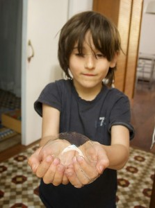

Inicio›Blog›Ocasión›Pompas con las manosOcasión · Verano · JugarPompas con las manos6 junio, 2014Pompas de jabón hechas solo con las manos… y luego Noah las atrapa.← El gotero de la enfermera HannahHombre fresa →